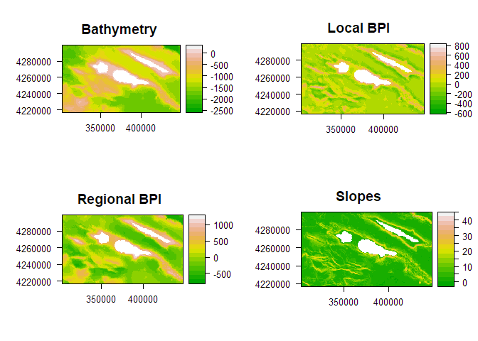
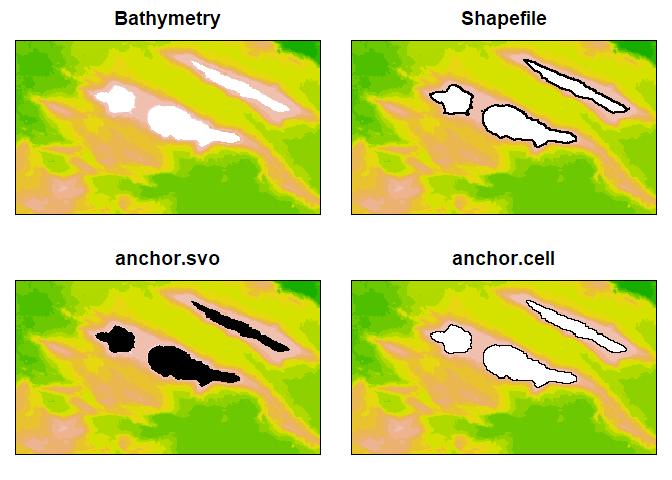
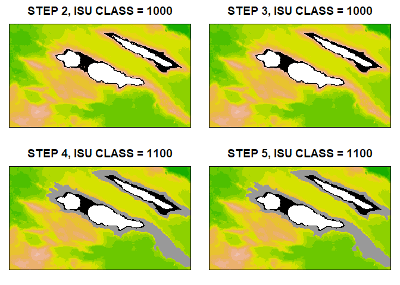
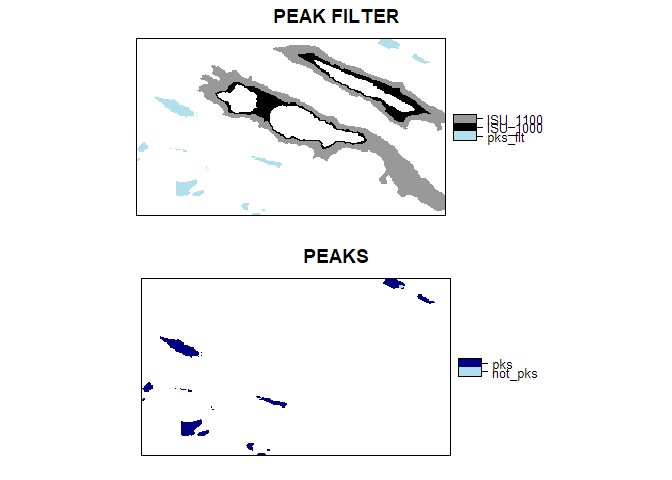
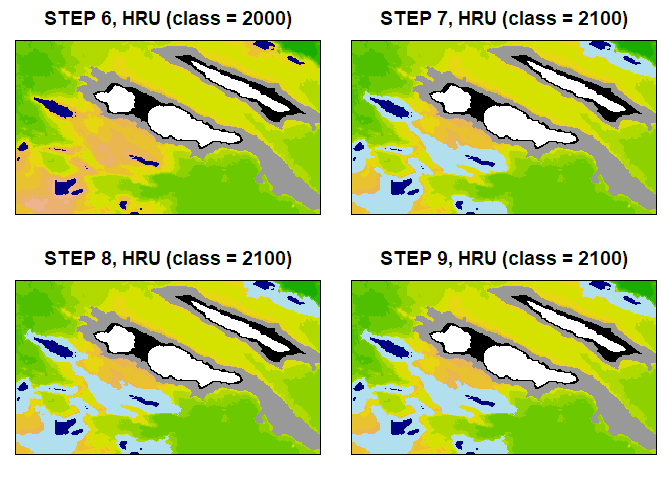
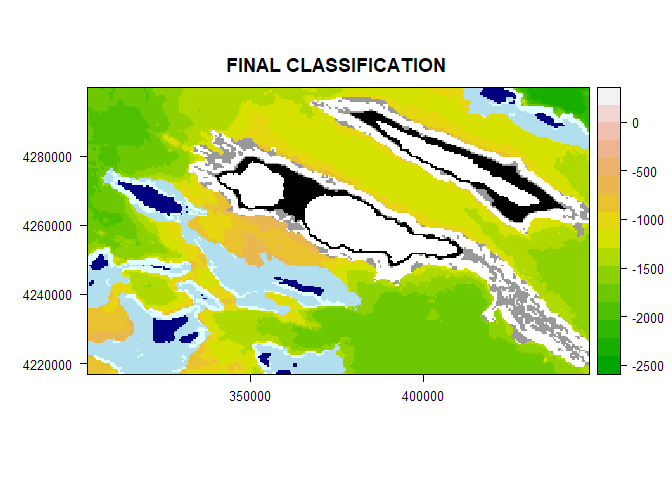

Classification of seascapes or landscapes using environmental and geographic data stored as Raster* objects. The classification is implemented using a stepwise procedure. At each step a portion of the “scape” is classified based on user defined conditions, local spatial statistics and/or spatial contiguity between classes. The portion of “scape” classified can be considered in the next classification step. User defined conditions can be absolute, relative to the focal cell or relative to the focal neighbourhood.
You can install the released version of scapesClassification from CRAN with:
# NOT YET
# install.packages("scapesClassification", dependencies = TRUE)And the development version from GitHub with:
# install.packages("devtools")
devtools::install_github("ghTaranto/scapesClassification", dependencies = TRUE)scapesClassification?scapesClassification can be used in any situation where we need to classify seascapes or landscapes based on a set of conditions that consider class contiguity and environmental or geographic data stored as Raster* objects.
For instance, let’s imagine we want to evaluate the potential spillover of an animal population from a reserve (i.e. the capacity of a population resident in a protected area to reach and colonize unprotected areas). If we know some of the abiotic and biotic characteristics of its habitat, we could estimate the potential spillover as the amount of area adjacent to the reserve that meets the species’ habitat requirements. The first step would be to identify raster cells adjacent to the reserve having suitable habitat. We will call this type of cells spillOver_Cell. However, we can also suppose that once an animal reaches these cells, he could move further away from the reserve to other contiguous suitable cells. For simplicity, imagine that a cell is suitable if var_x >= value_y. We can then solve our problem identifying all cells meeting the following conditions:
IF
Cis neighbour ofreserve_CellOR
Cis neighbour ofspillOver_CellsAND
var_x >= value_yTHEN
CisspillOver_Cells
In this case the classification process is iterative and depends on previous classification steps. In fact, as long as new cells are classified as spillOver_Cells, we will need to evaluate whether new contiguous cells meet our conditions or not.
We could also define this classification problem in more complex terms. For instance by considering areas with sub-optimal conditions as transition zones and areas adjacent to these transition zones showing improved habitat conditions as connected suitable areas. At the same time we could decide not to consider as suitable any cell adjacent to highways or urban areas and so on.
scapesClassification represent a powerful tool to solve complex classification problems using class contiguity (or discontinuity), user defined conditions and any number of environmental and geographic variables.
scapesClassification uses environmental and geographic raster to solve classification problems. Besides being thought of as a matrix, raster data can be thought of as a vector indexed by cell numbers (RSpatial). Functions in the scapesClassification package rely on cell numbers to evaluate local conditions and spatial adjacency.
In the first step the Raster* object is converted into an attribute table (data.frame). The first column of the attribute table, named Cell, refers to positions on the Raster* object. The attribute table includes only complete cases, i.e., raster cells having a value for every layer in the stack.
In the second step, we identify the list of 8-neighbors (Moore neighborhood) of every cell in the attribute table. This list allows for a fast evaluation of local and class contiguity conditions.
Anchor cells can be thought of as raster cells having particular characteristics from where the classification process can start. Anchor cells can be derived by: previous classifications (e.g., reserve cells), environmental or geographic characteristics (e.g., flat areas), local maxima or minima (e.g., local peaks on a mountain ridge) or spatial vector objects (e.g., shapefiles).
Functions: ?anchor.cell, ?anchor.seed, ?anchor.svo and ?cond.4.all.
Once anchor cells are defined, we can proceed with our classification considering class contiguity and a combination of absolute, focal cell, focal neighborhood and directional neighborhood conditions.
Conditions are passed to scapesClassification functions as a single character string. They can consist of combination of arithmetic (+|-|*|/|^|%%|%/%), relational (>|<|>=|<=|==|!=|%/%) and logic operators (&||), base R functions (e.g., abs(variable_name)), variables names (i.e., names(attTbl)) and previous classifications (referred to and stored as "classVector"). (see ?contitions).
Let us define:
focal cell: the cell whose neighbors are in evaluation;
nbs cell: one of the neighbors in evaluation;
focal neighborhood: when absolute focal neighborhood conditions are used, it includes nbs and its 8 neighbors; when relative focal neighborhood conditions are used, it only includes the 8 neighbors of nbs.
directional neighborhood: it consists of the intersection set of the focal cell neighbors with the focal neighborhood. When absolute focal neighborhood conditions are used, it includes nbs, but it does not include the focal cell; when relative focal neighborhood conditions are used, it includes the focal cell, but it does not include nbs.
library(scapesClassification)
## Matrix m mocking a raster of 3 rows and 4 columns
m <- matrix(1:12, nrow = 3, ncol = 4, byrow = TRUE)
m
#> [,1] [,2] [,3] [,4]
#> [1,] 1 2 3 4
#> [2,] 5 6 7 8
#> [3,] 9 10 11 12
## FOCAL CELL
fc <- 6
fc
#> [1] 6
## NBS CELLS
nbs <- nbg8(3, 4)[[6]]
nbs
#> [1] 1 2 3 5 7 9 10 11
# CELL IN EVALUATION
nbs1 <- nbs[1]
nbs1
#> [1] 1
# FOCAL NEIGHBORHOOD
# Absolute:
ab_fn_nbs1 <- c(nbs1, nbg8(3, 4)[[1]])
ab_fn_nbs1
#> [1] 1 2 5 6
# Relative:
r_fn_nbs1 <- c(nbg8(3, 4)[[1]])
r_fn_nbs1
#> [1] 2 5 6
# DIRECTIONAL FOCAL NEIGHBORHOOD
# Absolute:
ab_dfn_nbs1 <- c(nbs1, intersect(c(nbg8(3, 4)[[1]]) , nbg8(3, 4)[[6]]))
ab_dfn_nbs1
#> [1] 1 2 5
# Relative:
r_dfn_nbs1 <- c(fc, intersect(c(nbg8(3, 4)[[1]]) , nbg8(3, 4)[[6]]))
r_dfn_nbs1
#> [1] 6 2 5The types of conditions that can be use include (see "?conditions"):
Class contiguity. Defines the sets of cells for which we want to evaluate our conditions. When it is not considered all cells that have not yet been classified are evaluated. When it is considered only cells that have not yet been classified AND that are adjacent (or not adjacent) to a specific group of classes are evaluated. In the latter case, both absolute and relative conditions can be used. Their evaluation is iterative. At each iteration, conditions are evaluated for the 8-neighbors (nbs) adjacent to the focal cell. Focal cells always belong to one of the classes of interest.
Absolute conditions. Absolute conditions compare between nbs and user defined numeric values.
Focal cell conditions. Focal cell conditions compare between the values of nbs and the value of the focal cell.
Absolute focal neighborhood conditions. They compare each cell of focal neighborhood with a numeric value. The function cond.4.nofn can consider a directional neighborhood instead of a focal neighborhood.
Relative focal neighborhood conditions. They compare each cell of focal neighborhood with nbs. The function cond.4.nofn can consider a directional neighborhood instead of a focal neighborhood.
Functions: "?conditions", "?cond.4.all", "?cond.4.nofn", "?cond.reclass", "?classify.all", "?reclass.nbs".
The following is an example using scapesClassification to classify marine seafloor structures, hereinafter referred to as geomorphic management units (GMUs). Our study area is located in the ‘Triangle’ of the Azores (NE Atlantic), around the islands of Faial, Pico and São Jorge. In order to identify relevant GMUs, we will use a RasterStack of four layers, including bathymetry and bathymetric derivatives (e.g. see Walbridge et al., 2018 as a reference for benthic derivatives):
(CRS: +proj=utm +zone=26 +datum=WGS84 +units=m +no_defs)
We will use the package rasterVis for plotting our results.
We can load the RasterStack and create the attribute table and the 8-neighbors list with the following code:
# LOAD LIBRARIES
library(raster)
library(sp)
library(rgdal)
library(scapesClassification)
# FOR PLOTTING
library(rasterVis)
library(gridExtra)
library(latticeExtra)
# READ RASTER STACK
grd <- list.files(system.file("extdata", package = "scapesClassification"), full.names = T)
grd <- grd[grep("\\.grd", grd)]
rstack <- raster::stack(grd)
# ATTRIBUTE TABLE
dt <- attTbl(rstack, var_names = c("bathymetry", "local_bpi", "regional_bpi", "slope"))
# 8-neighbors list
nbs <- ngbList(rstack)
# PLOT
p1 <- rasterVis::levelplot(rstack[[1]], col.regions = terrain.colors(255), margin = F, main = "Bathymetry")
p2 <- rasterVis::levelplot(rstack[[2]], col.regions = terrain.colors(255), margin = F, main = "Local BPI")
p3 <- rasterVis::levelplot(rstack[[3]], col.regions = terrain.colors(255), margin = F, main = "Regional BPI")
p4 <- rasterVis::levelplot(rstack[[4]], col.regions = terrain.colors(255), margin = F, main = "Slopes")
gridExtra::grid.arrange(p1, p2, p3, p4, nrow=2)
In order to start our GMUs classification, we can consider island shelf units (ISUs). ISUs comprise two main elements: (i) island shelves (i.e. relatively flat areas surrounding islands) and (ii) slopes that connect island shelves with the seafloor. We will classify island shelves with the numeric value 1000 and island slopes with the numeric value 1100.
By definition, it is possible to consider all cells adjacent to landmasses as island shelves. We can use (i) a shapefile to determine where the islands are located, (ii) the function anchor.svo to extract anchor cells from spatial vector objects and (iii) the function anchor.cell to perform the first step of our classification by classifying all cells adjacent to landmasses as island shelves (see ?anchor.cell and ?anchor.svo for more details):
# READ SHAPEFILE
shp <- system.file("extdata", "Azores.shp", package = "scapesClassification")
island <- rgdal::readOGR(dsn = shp, verbose = F)
island <- sp::spTransform(island, raster::crs(rstack))
## ANCHOR POINTS FROM LAND POSITION
anchorL <- anchor.svo (rstack = rstack,
spatial_vector_name = shp,
only_NAs = TRUE,
fill_NAs = TRUE,
plot = FALSE)
## SET CELLS ADJACENT TO LAND ANCHOR POINTS AS ISLAND SHELVES (class = 1000)
classVector <- anchor.cell(dt,
rstack,
anchor = anchorL,
class = 1000,
classVector = NULL,
class2cell = FALSE,
class2nbs = TRUE,
plot = FALSE)
## INCLUDE ANCHOR POINTS and classVector IN A RASTER FOR PLOTTING
rL <- rstack[[1]]; rL[] <- NA; rL[anchorL] <- 1
rAC <- rstack[[1]]; rAC[] <- NA; rAC[dt$Cell] <- classVector
## PLOT RESULTS
p1 <- rasterVis::levelplot(rstack[[1]], col.regions = terrain.colors(255), margin = F, main = "Bathymetry", colorkey = FALSE, scales=list(draw=FALSE))
p2 <- rasterVis::levelplot(rstack[[1]], col.regions = terrain.colors(255), margin = F, main = "Shapefile", colorkey = FALSE, scales=list(draw=FALSE)) +
latticeExtra::layer({
island <- system.file("extdata", "Azores.shp", package = "scapesClassification")
island <- rgdal::readOGR(dsn = island, verbose = F)
island <- sp::spTransform(island, "+proj=utm +zone=26 +datum=WGS84 +units=m +no_defs")
sp.polygons(island, lwd = 2)
})
p3 <- rasterVis::levelplot(rstack[[1]], col.regions = terrain.colors(255), margin = F, main = "anchor.svo", colorkey = FALSE, scales=list(draw=FALSE)) +
rasterVis::levelplot(rL, col.regions = "black", colorkey = FALSE)
p4 <- rasterVis::levelplot(rstack[[1]], col.regions = terrain.colors(255), margin = F, main = "anchor.cell", colorkey = FALSE, scales=list(draw=FALSE)) +
rasterVis::levelplot(rAC, col.regions = "black", colorkey = FALSE)
gridExtra::grid.arrange(p1, p2, p3, p4, nrow=2)
?anchor.svo arguments:
only_NAs determines the function to return only cell numbers overlapping with the spatial vector data that have missing values in rstack.fill_NAs determines the function to return cell numbers of cells adjacent to those overlapping with the spatial vector data that have missing values in rstack.?anchor.cell arguments:
class2nbs attribute the new classification, defined by the argument class, to the cells adjacent to anchor cells.The classification of the first step is returned as a class vector (classVector). All class vectors can be indexed back into the original raster considering the the cell numbers stored in the attribute table, column Cell. In this example we can use the following code:
## CREATE AN EMPTY RASTER WITH THE SAME PROPERTIES AS THE ORIGINAL RASTER STACK
# r2 <- rstack[[1]]
# r2[] <- NA
## INDEX THE CLASS VECTOR INTO THE RASTER
# r2[dt$Cell] <- classVector
## PLOT OR SAVE RESULTS
# raster::plot(r2)
# raster::writeRaster(r2, "step01_ISU.tif")
# IN ALTERNATIVE USE ?cv.2.rast FUNCTION
# cv.2.rast(rstack, dt$Cell, classVector, writeRaster = "step01_ISU.tif")We can now continue with the classification of ISUs:
Step 2. We define that all cells adjacent to island shelf cells having a moderate slope will be considered, as well, as island shelf. Note that we want to push this classification to all cells neighboring newly classified cells (neighbors of neighbors or nofn) that respect our conditions. We can do so using the function cond.4.nofn to classify all neighbors and nofn of island shelf cells (nbs_of = 1000) as island shelf (class = 1000) if they have a moderate slope (slope <= 5) (see ?cond.4.nofn and ?conditions for more details).
Step 3. Additionally, we can consider that if a cell is surrounded by at least 5 cells classified as island shelf, then it can also be classified as island shelf. Again we use the function cond.4.nofn, but this time we set the argument min.border = 0.6 (i.e., at least 60% of the 8 cells neighboring the cell in evaluation have to be classified as island shelf).
Step 4. We can now classify island slopes (class = 1100). Island slopes are adjacent to island shelves and to island slopes (nbs_of = c(1000, 1100). We consider that all island slopes are elevated with respect to the seafloor (regional_bpi{}>100). Note that we are using an absolute focal neighborhood condition based on directional neighborhoods (curly bracket flag and argument directional = TRUE) (see ?conditions for more details).
Step 5. We can then consider that as long as newly evaluated cells adjacent to slopes are deeper than their directional neighborhood they also belong to the class island slopes (bathymetry < bathymetry{} - 10 & local_bpi>0). The term bathymetry{} - 10 consider that if the cells in evaluation are 10m shallower than the directional neighborhood they can still be classified as island slopes; the term local_bpi>0 define the limits between distinct ISUs (i.e. when local_bpi < 0 we have reached the limit of our ISU).
# STEP 2, ISU (class = 1000)
classVector2 <- cond.4.nofn(dt, nbs, nbsIndex = FALSE,
classVector,
nbs_of = 1000,
conditions = "slope <= 5",
class = 1000)
# STEP 3, ISU (class = 1000)
classVector3 <- cond.4.nofn(dt, nbs, nbsIndex = FALSE,
classVector2,
nbs_of = 1000,
conditions = "TRUE",
class = 1000,
min.border = 0.6)
# STEP 4, ISU (class = 1100)
classVector4 <- cond.4.nofn(dt, nbs, nbsIndex = FALSE,
classVector3,
nbs_of =c(1000, 1100),
conditions = "regional_bpi{} > 100",
class = 1100,
fn_perc = 0.5,
directional = TRUE)
# STEP 5, ISU (class = 1100)
classVector5 <- cond.4.nofn(dt, nbs, nbsIndex = FALSE,
classVector4,
nbs_of = c(1000, 1100),
conditions = "bathymetry < bathymetry{} - 10 & local_bpi > 0",
class = 1100,
min.border = 0.2,
fn_perc = 0.6,
directional = TRUE)
## INCLUDE classVector IN A RASTER FOR PLOTTING
r2 <- rstack[[1]]; r2[] <- NA; r2[dt$Cell] <- classVector2
r3 <- rstack[[1]]; r3[] <- NA; r3[dt$Cell] <- classVector3
r4 <- rstack[[1]]; r4[] <- NA; r4[dt$Cell] <- classVector4
r5 <- rstack[[1]]; r5[] <- NA; r5[dt$Cell] <- classVector5
## PLOT RESULTS
p1 <- rasterVis::levelplot(rstack[[1]], col.regions = terrain.colors(255), margin = F, main = "STEP 2, ISU CLASS = 1000", colorkey = FALSE, scales=list(draw=FALSE)) + rasterVis::levelplot(r2, col.regions = c("black"), colorkey = FALSE)
p2 <- rasterVis::levelplot(rstack[[1]], col.regions = terrain.colors(255), margin = F, main = "STEP 3, ISU CLASS = 1000", colorkey = FALSE, scales=list(draw=FALSE)) + rasterVis::levelplot(r3, col.regions = c("black"), colorkey = FALSE)
p3 <- rasterVis::levelplot(rstack[[1]], col.regions = terrain.colors(255), margin = F, main = "STEP 4, ISU CLASS = 1100", colorkey = FALSE, scales=list(draw=FALSE)) + rasterVis::levelplot(r4, col.regions = c("black", "grey60"), colorkey = FALSE)
p4 <- rasterVis::levelplot(rstack[[1]], col.regions = terrain.colors(255), margin = F, main = "STEP 5, ISU CLASS = 1100", colorkey = FALSE, scales=list(draw=FALSE)) + rasterVis::levelplot(r5, col.regions = c("black", "grey60"), colorkey = FALSE)
gridExtra::grid.arrange(p1, p2, p3, p4, nrow=2)
Note that at each step our classVector is updated with newly classified cells.
Identify local peaks
We can now proceed with the classification of high relief units (HRUs). HRUs comprise two main elements: (i) local peaks (class = 2000) and (ii) slopes (class = 2100).
To start we will identify local peaks and use them as anchor cells to proceed with our classification. We will use the function anchor.seed to identify local maxima in elevation (i.e. peaks) (see ?anchor.seed for more details).
First we will define a filter to determine were to look for peaks. We consider HRUs as having areas that elevates at least 500m from the seafloor (regional_bpi > 500) not classified as ISUs. We will use the function cond.4.all, that does not consider class contiguity, to define our filter (see ?cond.4.all for more details).
We can will use the function anchor.seed to identify our peaks. This function takes three sets of conditions: (i) cond.filter is used to determine were to look for local minima or maxima; (ii) cond.seed is used to determine local minima or maxima; (iii) cond.isol is used to determine how one local maxima or minima is isolated from another. In this case our cond.isol considers a focal cell conditions (square brackets flag) (bathymetry[] > bathymetry + (-10)). This condition states that as long as the cell in evaluation is deeper than the focal cell it can be considered as a not-peak cell. The term bathymetry + (-10) indicated that small depth rises (up to 10m) in the cell in evaluation are ignored (see ?anchor.seed and ?conditions for more details).
# DEFINE THE PEAK FILTER
pks_filter <- cond.4.all(dt,
conditions = "regional_bpi > 500 & local_bpi > 50",
classVector5,
class = 1,
overwrite_class = F)
# IDENTIFY LOCAL PEAKS
pks <- anchor.seed(dt,
nbs,
class = 1,
cond.filter = "classVector == 1",
cond.seed = "bathymetry == max(bathymetry)",
cond.isol = "bathymetry[] > bathymetry + (-10)",
lag.isol = 2,
classVector = pks_filter,
isolationClass = TRUE,
silent = TRUE)
## INCLUDE classVector IN A RASTER FOR PLOTTING
r2 <- rstack[[1]]; r2[] <- NA; r2[dt$Cell] <- pks_filter
r3 <- rstack[[1]]; r3[] <- NA; r3[dt$Cell] <- pks
## PLOT RESULTS
r2 <- raster::ratify(r2); rat <- levels(r2)[[1]]; rat$class <- c('pks_flt', 'ISU_1000', 'ISU_1100'); levels(r2) <- rat
r3 <- raster::ratify(r3); rat <- levels(r3)[[1]]; rat$class <- c('not_pks', 'pks'); levels(r3) <- rat
p1 <- rasterVis::levelplot(r2, att = "class", col.regions = c("lightblue2", "black", "grey60"), main = "PEAK FILTER", margin = FALSE, scales=list(draw=FALSE))
p2 <- rasterVis::levelplot(r3, att = "class", col.regions = c("lightblue2", "navy"), main = "PEAKS", margin = FALSE, scales=list(draw=FALSE))
gridExtra::grid.arrange(p1, p2, nrow=2)
Classify HRUs
We can now continue with the classification of HRUs considering peaks (class = 2000) and high relief slopes (class = 2100) with the following steps:
Step 6. Include peaks in our classification vector with the function anchor.cell (see anchor.cell for more details).
Step 7. High relieves slopes are elevated with respect to the seafloor (regional_bpi{} > 100).
Step 8. As long as newly evaluated cells adjacent to slopes are deeper than their directional neighborhood they also belong to the class high relieves slopes (bathymetry < bathymetry{} - 10 & local_bpi>0); the term local_bpi>0 define the limits between distinct HRUs.
Step 9. If a cell is surrounded by at least 5 cells classified as high relief slope, then it can also be classified as high relief slope (min.border = 0.6).
## REMOVE NOT PEAKS FROM pks CLASS VECTOR AND EXTRACT PEAK CELLS
pks[pks == -1] <- NA
anchorP <- dt$Cell[which(!is.na(pks))]
# STEP 6, HRU (class = 2000)
classVector6 <- anchor.cell(dt,
rstack,
anchor = anchorP,
class = 2000,
classVector = classVector5,
class2cell = TRUE,
class2nbs = FALSE,
plot = FALSE)
# STEP 7, HRU (class = 2100)
classVector7 <- cond.4.nofn(dt, nbs, nbsIndex = FALSE,
classVector6,
nbs_of = c(2000, 2100),
conditions = "regional_bpi{} > 100",
class = 2100,
fn_perc = 0.5,
directional = TRUE)
# STEP 8, HRU (class = 2100)
classVector8 <- cond.4.nofn(dt, nbs, nbsIndex = FALSE,
classVector7,
nbs_of = c(2000, 2100),
conditions = "bathymetry < bathymetry{} - 10 & local_bpi > 0",
class = 2100,
min.border = 0.2,
fn_perc = 0.6,
directional = TRUE)
# STEP 9, HRU (class = 2100)
classVector9 <- cond.4.nofn(dt, nbs, nbsIndex = FALSE,
classVector8,
nbs_of = c(2000, 2100),
conditions = "TRUE",
class = 2100,
min.border = 0.6)
## INCLUDE classVector IN A RASTER FOR PLOTTING
r2 <- rstack[[1]]; r2[] <- NA; r2[dt$Cell] <- classVector6
r3 <- rstack[[1]]; r3[] <- NA; r3[dt$Cell] <- classVector7
r4 <- rstack[[1]]; r4[] <- NA; r4[dt$Cell] <- classVector8
r5 <- rstack[[1]]; r5[] <- NA; r5[dt$Cell] <- classVector9
## PLOT RESULTS
r2 <- raster::ratify(r2); rat <- levels(r2)[[1]]; rat$class <- c('1000', '1100', '2000'); levels(r2) <- rat
r3 <- raster::ratify(r3); rat <- levels(r3)[[1]]; rat$class <- c('1000', '1100', '2000', '2100'); levels(r3) <- rat
r4 <- raster::ratify(r4); rat <- levels(r4)[[1]]; rat$class <- c('1000', '1100', '2000', '2100'); levels(r4) <- rat
r5 <- raster::ratify(r5); rat <- levels(r5)[[1]]; rat$class <- c('1000', '1100', '2000', '2100'); levels(r5) <- rat
p1 <- rasterVis::levelplot(rstack[[1]], col.regions = terrain.colors(255), margin = F, main = "STEP 6, HRU (class = 2000)", colorkey = FALSE, scales=list(draw=FALSE)) + rasterVis::levelplot(r2, att = "class", col.regions = c("black", "grey60", "navy"), main = "STEP6", margin = FALSE, colorkey= FALSE, scales=list(draw=FALSE))
p2 <- rasterVis::levelplot(rstack[[1]], col.regions = terrain.colors(255), margin = F, main = "STEP 7, HRU (class = 2100)", colorkey = FALSE, scales=list(draw=FALSE)) + rasterVis::levelplot(r3, att = "class", col.regions = c("black", "grey60", "navy", "lightblue2"), main = "STEP6", margin = FALSE, colorkey= FALSE, scales=list(draw=FALSE))
p3 <- rasterVis::levelplot(rstack[[1]], col.regions = terrain.colors(255), margin = F, main = "STEP 8, HRU (class = 2100)", colorkey = FALSE, scales=list(draw=FALSE)) + rasterVis::levelplot(r4, att = "class", col.regions = c("black", "grey60", "navy", "lightblue2"), main = "STEP6", margin = FALSE, colorkey= FALSE, scales=list(draw=FALSE))
p4 <- rasterVis::levelplot(rstack[[1]], col.regions = terrain.colors(255), margin = F, main = "STEP 9, HRU (class = 2100)", colorkey = FALSE, scales=list(draw=FALSE)) + rasterVis::levelplot(r5, att = "class", col.regions = c("black", "grey60", "navy", "lightblue2"), main = "STEP6", margin = FALSE, colorkey= FALSE, scales=list(draw=FALSE))
gridExtra::grid.arrange(p1, p2, p3, p4, nrow=2)
In the final steps of our classification we will reclassify some cell. Some marine organisms live in environments characterized by steep slopes (e.g., slope >= 10). We will highlight such slopes on ISUs and HRUs using the function cond.reclass. This function will reclassify ISU slopes as moderate (class = 1100) and steep (class = 1200) and HRU slopes as moderate (class = 2100) and steep (class = 2200). See ?cond.reclass for more details.
# STEP 10, RECLASSIFY STEEP SLOPES ON ISUs (class = 1200)
classVector10 <- cond.reclass(dt, nbs, nbsIndex = FALSE,
classVector9,
conditions = "slope >= 10",
class = 1100,
reclass = 1200)
# STEP 10, RECLASSIFY STEEP SLOPES ON HRUs (class = 2200)
classVector11 <- cond.reclass(dt, nbs, nbsIndex = FALSE,
classVector10,
conditions = "slope >= 10",
class = 2100,
reclass = 2200)
## INCLUDE classVector IN A RASTER FOR PLOTTING
r3 <- rstack[[1]]; r3[] <- NA; r3[dt$Cell] <- classVector11
## PLOT RESULTS
r3 <- raster::ratify(r3); rat <- levels(r3)[[1]]; rat$class <- c('1000', '1100', '1200', '2000', '2100', '2200'); levels(r3) <- rat
rasterVis::levelplot(rstack[[1]], col.regions = terrain.colors(255), margin = F, main = "FINAL CLASSIFICATION") +
rasterVis::levelplot(r3, att = "class", col.regions = c("black", "grey60", "white", "navy", "lightblue2", "lightcyan"), main = "STEP10", margin = FALSE)Final classification colorkey: island shelf (ISU_1000) (black); island moderate slopes (ISU_1100) (grey); island steep slopes (ISU_1200) (white); high relief peaks (HRU_2000) (dark blue); high relief moderate slopes (light blue); high relief steep slopes (light cyan).